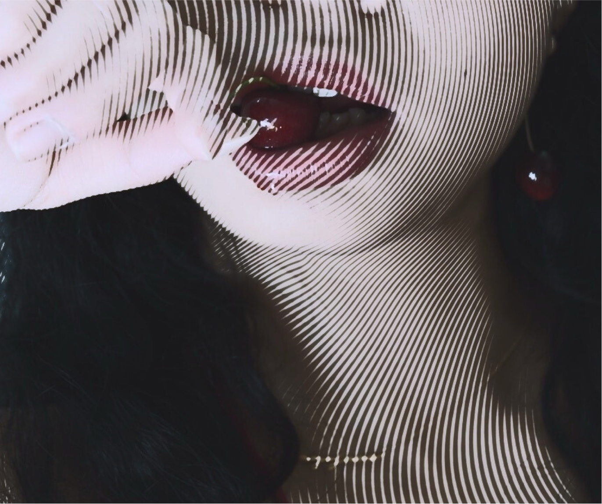
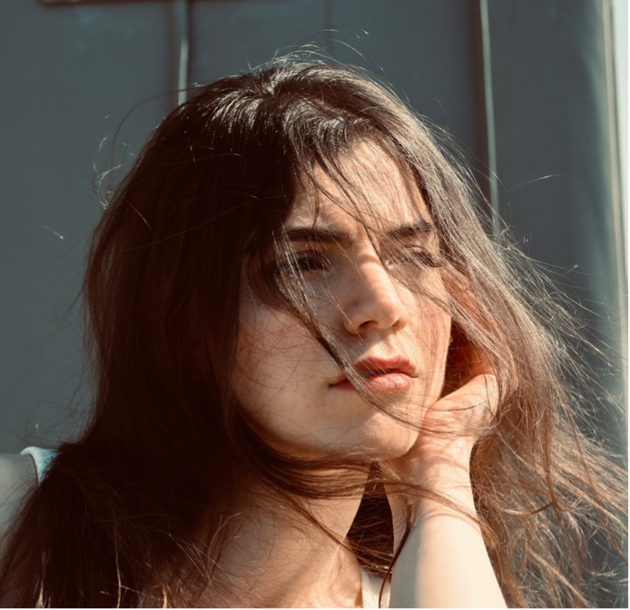
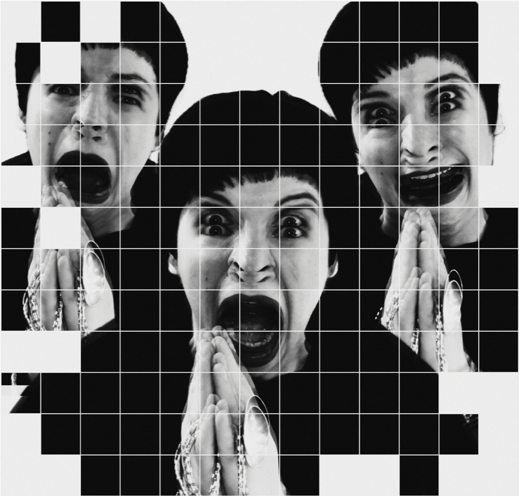
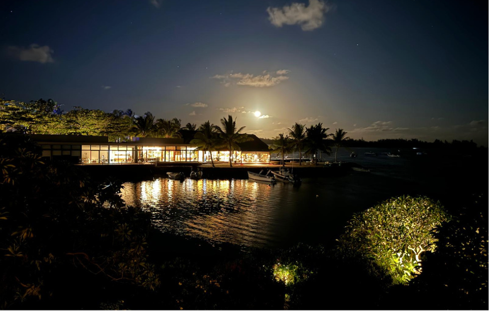

05
Carnet de bord
Process
Rien ne sort du néant. Voilà comment une image arrive — du gribouillis au tirage.

// ça commence ici
01 — Collecter
[TODO: comment naît une idée. Images volées, couleurs, une chanson, une lumière vue dans la rue.]

// on dessine mal, mais on dessine
02 — Cadrer
[TODO: le passage à l'intention. Storyboard, plan de lumière, références techniques.]

// Paris, 7h, personne
03 — Repérer
[TODO: le terrain. Trouver le lieu, l'heure, la météo. La moitié du travail.]

// et là, ça se passe
04 — Déclencher
[TODO: le moment. Diriger, attendre, rater, recommencer, attraper l'instant.]
« Le process, c'est 90 % de doute et 10 % de déclic. Le déclic vaut tout. »